40 equipamentos de reparo
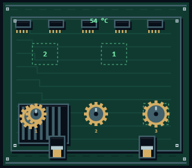
Transmissão da ventoinha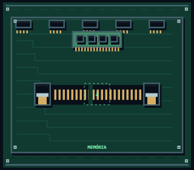
Encaixe de memória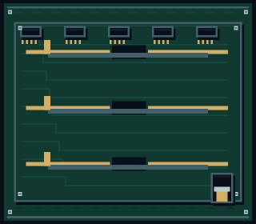
Solda dos barramentos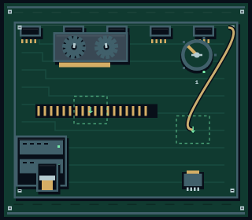
Alimentação da GPU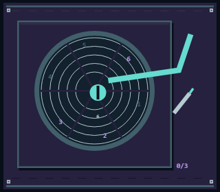
Recuperadora de disco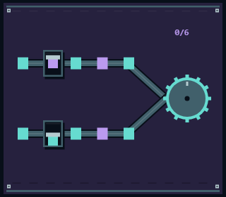
Tear de processos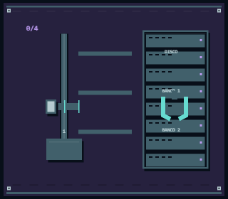
Transporte de páginas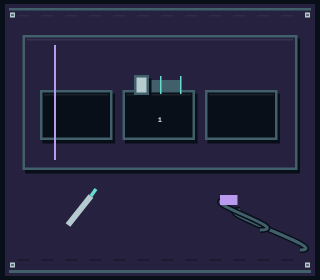
Câmara de quarentena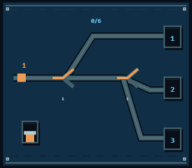
Desviadores de pacotes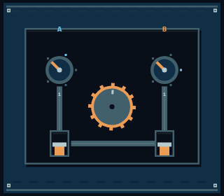
Embreagens do uplink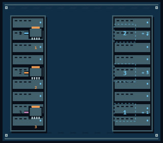
Cordões do switch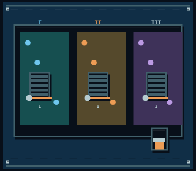
Comportas de isolamento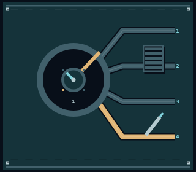
Periscópio de saída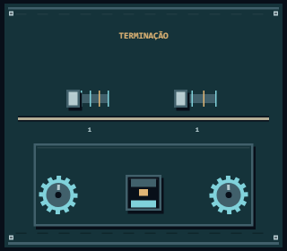
Terminação de interface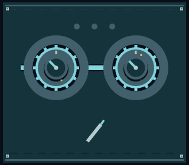
Cames de prefixo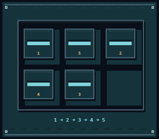
Trilhos de encaminhamento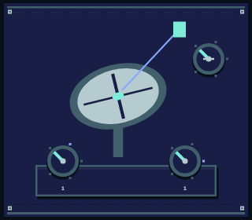
Gimbal da antena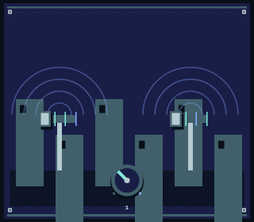
Mastros de repetição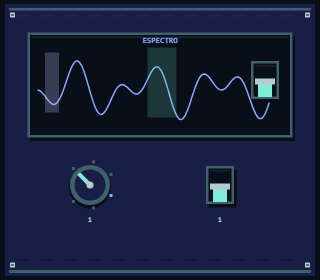
Sintonia do espectro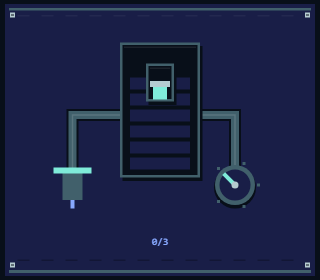
Compressor de sinal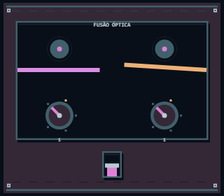
Fusão de fibra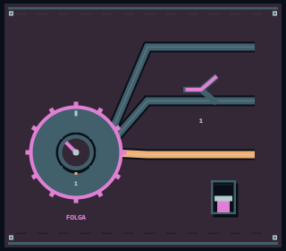
Carretel e conduítes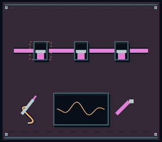
Rastreamento de ruptura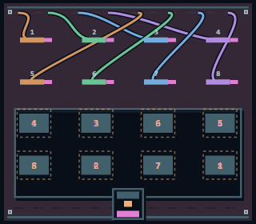
Pente e crimpagem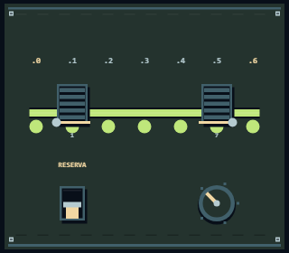
Eclusa do pool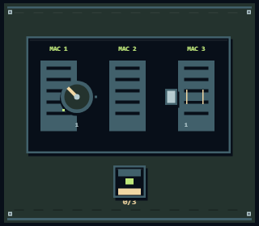
Tambor de reservas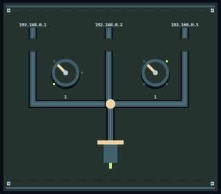
Tubos de concessão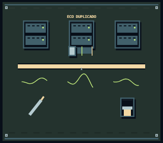
Localizador de colisão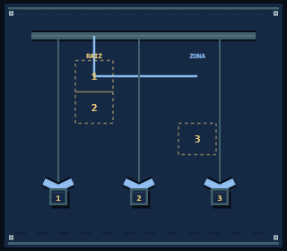
Guincho de delegação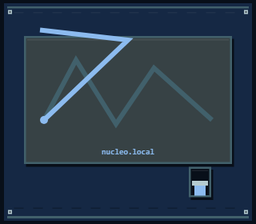
Gravadora de registros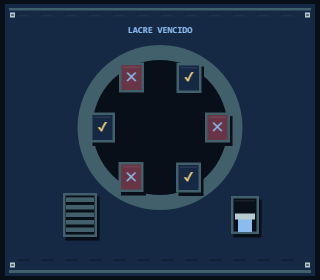
Carrossel de cache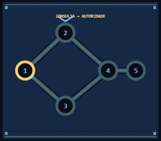
Mensageiro recursivo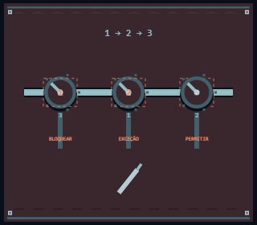
Comando de políticas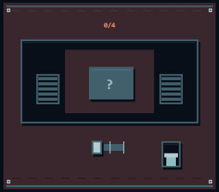
Eclusa de inspeção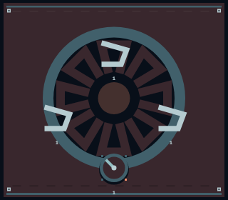
Íris de proteção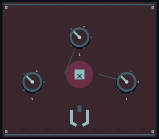
Triangulação de ameaça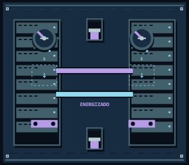
Barramentos de potência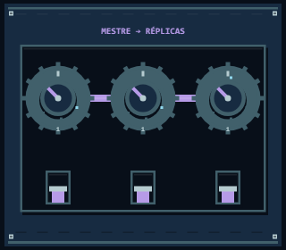
Volantes de sincronismo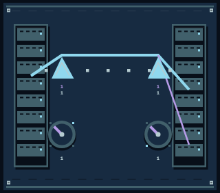
Prismas do backbone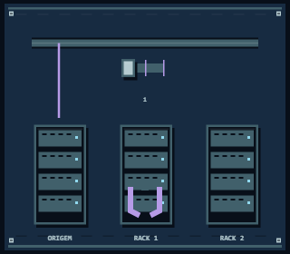
Pórtico de recuperação